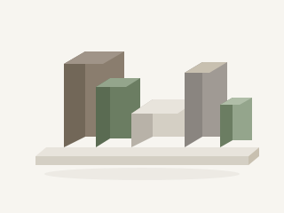

Steg 1
Hem — Household Briefing
Ser
Personlig hälsning, hushållsstatus och en För dig-rekommendation — inte ett widget-rutnät.
Lär
Skaffu vet vad som går ut och vad som saknas för veckans måltid.
Gör
Trycker på rekommendationen eller chipset «Fredagshandling».
Nästa känns naturligt
Rekommendationen har redan lagt till saknade varor — listan väntar i Inköp.